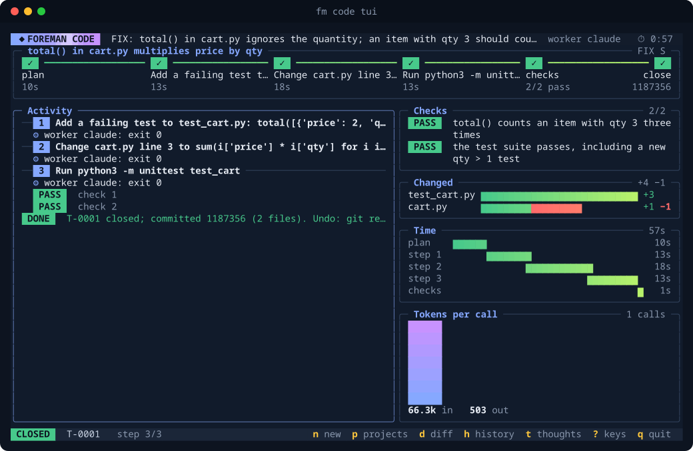

fm code 'FIX: total() in cart.py ignores the quantity; an item with qty 3 should count three times' --worker claude

Plan FIX S · total() in cart.py multiplies price by qty
Steps
- Add a failing test to test_cart.py: total([{'price': 2, 'qty': 3}]) == 6
- Change cart.py line 3 to sum(i['price'] * i['qty'] for i in items)
- Run python3 -m unittest test_cart
Checks
- PASS total() counts an item with qty 3 three times
python3 -c "from cart import total; assert total([{'price': 2, 'qty': 3}]) == 6"(failed before the work) - PASS the test suite passes, including a new qty > 1 test
python3 -m unittest test_cart -q && grep -q "'qty': 3" test_cart.py(failed before the work)
Changed
test_cart.py+3cart.py+1 −1
Closed T-0001 closed; committed 1187356 (2 files). Undo: git revert --no-edit 1187356 (tokens: 66311 in, 503 out)